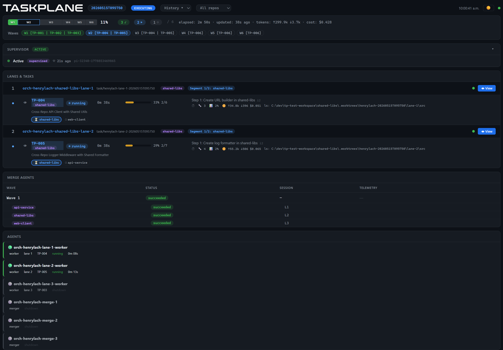

12 · The operator's view

Why a web dashboard, not a CLI
The dashboard is a view over disk — every panel maps to a file the engine already writes. It reads, it never decides. It cannot lie.

Data sources (read-only)
- batch state
- lane snapshots
- events
- actions
- history
- reviews
- status
- mailbox
Why not a CLI
- structured data — many sources, many shapes; a dashboard fans them out, a CLI flattens them.
- mid-glance ergonomics — SSE pushes truth into a tab; the tab updates while you're somewhere else.
- read-only by design — control lives in /orch and the supervisor agent; the dashboard never decides.
- file-backed truth — every panel maps to a file. If it disagrees, the file wins.